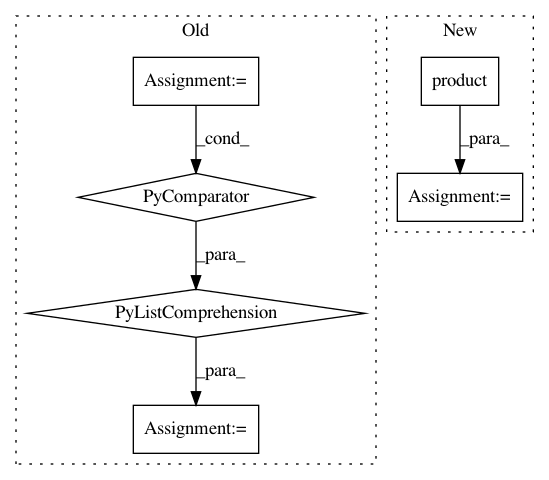

fe50dfc3e52a9d31827e10a1ee4b2aec3ff087f7,innvestigate/utils/keras/graph.py,,get_layer_neuronwise_io,#Any#Any#Any#Any#,188
Before Change
// (n, channels) dot (dimension, channels).T = (n, dimensions)
if contains_bias(layer):
layer_wo_bias = copy_layer(layer, keep_bias=False)
tmp = iutils.listify(kutils.easy_apply(layer_wo_bias, Xs))
tmp = [reshape(x) for x in tmp]
kernel = kernel.reshape((-1, n_channels))
dense = keras.layers.Dense(kernel.shape[0], use_bias=False)
ret_Xs = [dense(x) for x in tmp]
After Change
layer.strides,
layer.dilation_rate,
layer.padding)
reshape = ilayers.Reshape((-1, np.product(kernel.shape[:3])))
ret_Xs = [reshape(extract_patches(x)) for x in Xs]
if return_o:
// Get Ys into shape (n, channels)
In pattern: SUPERPATTERN
Frequency: 3
Non-data size: 6
Instances
Project Name: albermax/innvestigate
Commit Name: fe50dfc3e52a9d31827e10a1ee4b2aec3ff087f7
Time: 2018-02-15
Author: alber.maximilian@gmail.com
File Name: innvestigate/utils/keras/graph.py
Class Name:
Method Name: get_layer_neuronwise_io
Project Name: kengz/SLM-Lab
Commit Name: 8c17debc9dc6552da8c317c0c852b55f03c80c61
Time: 2017-12-24
Author: kengzwl@gmail.com
File Name: slm_lab/spec/spec_util.py
Class Name:
Method Name: resolve_aeb
Project Name: bashtage/linearmodels
Commit Name: 1345f1b1b41c047a95deff2442283025c3f6269f
Time: 2019-03-12
Author: kevin.k.sheppard@gmail.com
File Name: linearmodels/tests/panel/test_panel_ols.py
Class Name:
Method Name: